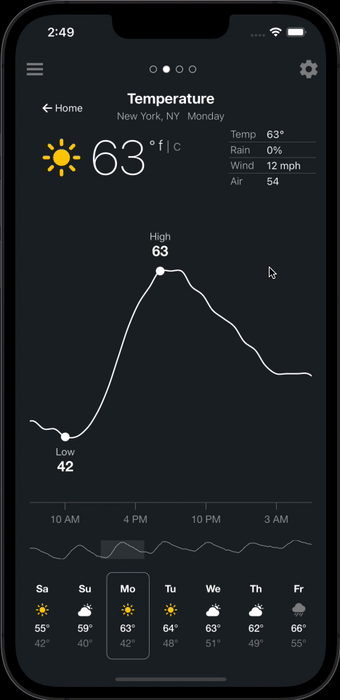

Have you ever flown to a new city—maybe Chicago or Stolkholm— and wondered how cold it might be when you need to walk to work in the morning? Forecasts are one thing, but they are not reliable. How might you be able to know what locals in Chicago or Stolkholm know intuitively?

Users can view historic weather data.
Say a user wants to know the temperature in New York City when they plan to walk to work—8 AM on November 4th. Imagine they could see what the weather tends to be like at that time based on 40 years of historical data.
To do this, 8 AM temperatures for New York City on November 1st through November 7th would be collected (280 measurements), then percentiles would be calculated. The user can then see historics by dragging down on the chart.
I don' normally jump from idea to code, but React's concept of components and state made certain design principles relatively easy to implement.